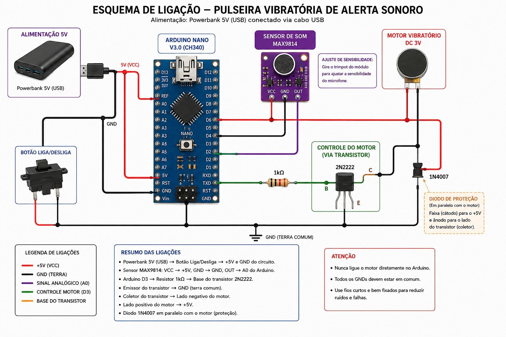
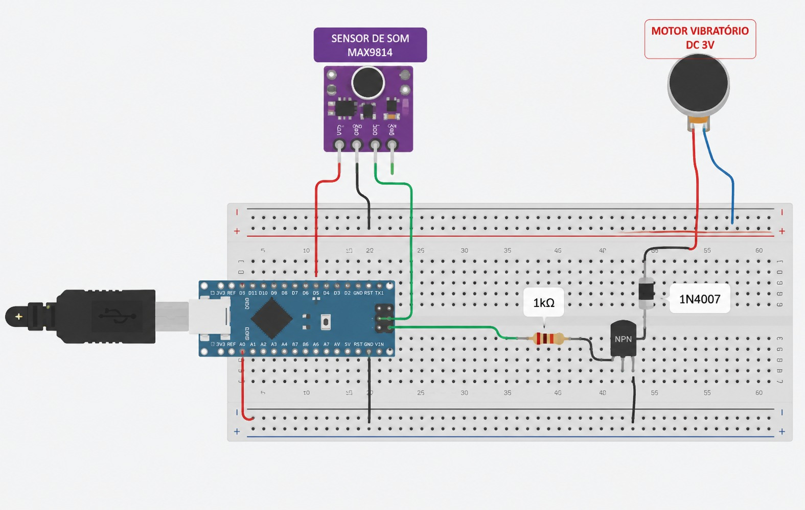

Projeto


Este projeto apresenta o desenvolvimento de uma pulseira vibrotátil baseada em Arduino, criada para auxiliar pessoas surdas e com deficiência auditiva na percepção de sons do ambiente. A proposta utiliza sensores e vibração para transformar estímulos sonoros em sinais táteis, promovendo acessibilidade, inclusão e autonomia.
Resumo: Este trabalho tem como objetivo apresentar o desenvolvimento de uma pulseira vibrotátil baseada em Arduino como tecnologia assistiva para pessoas com surdez e deficiência auditiva. O dispositivo capta sons do ambiente, como buzinas, e os converte em vibrações táteis, permitindo ao usuário perceber alertas importantes. A metodologia envolveu a construção do protótipo, testes em ambientes urbanos simulados e entrevistas com usuários potenciais. Conclui-se que a pulseira contribui para maior segurança, autonomia e inclusão social, sendo uma alternativa acessível e funcional para o cotidiano.
Objetivos
A pulseira vibrotátil funciona por meio da captação de sons do ambiente e da conversão desses estímulos em vibrações táteis percebidas pelo usuário.
O sensor MAX9814 detecta sons do ambiente, como buzinas, alarmes e chamadas, transformando esses estímulos em sinais elétricos.
O Arduino Nano recebe os sinais do sensor e processa as informações para identificar quando o motor vibratório deve ser acionado.
O transistor 2N2222 auxilia no acionamento do motor vibratório, enquanto o resistor de 1kΩ controla a corrente elétrica do circuito.
O diodo 1N4007 protege os componentes contra possíveis variações elétricas geradas pelo motor vibratório.
Após o processamento, o motor vibratório DC 3V é ativado, emitindo vibrações que permitem ao usuário perceber os estímulos sonoros.


Vídeo demonstrando o funcionamento da pulseira, testes realizados.